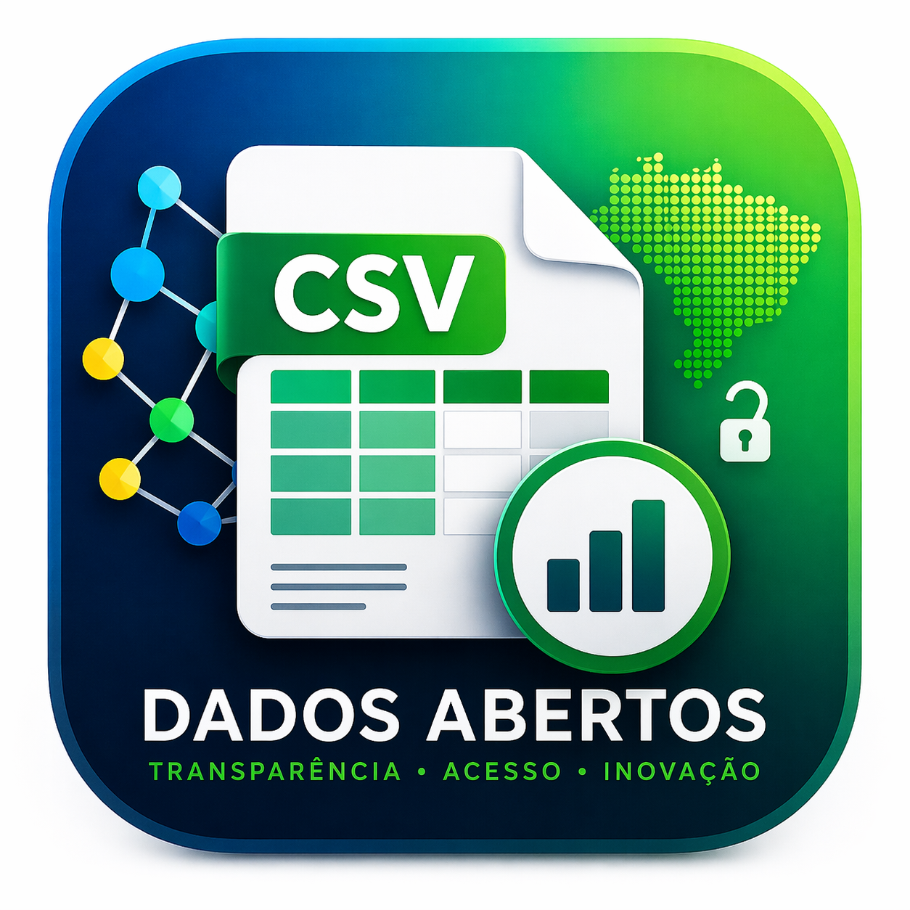

Muitos arquivos públicos são disponibilizados em CSV, mas na prática eles costumam ser difíceis de abrir, interpretar e trabalhar no Excel.
O Leitor CSV - Dados Abertos foi criado para resolver exatamente esse problema de forma simples, rápida e acessível.
QUERO ACESSAR AGORAO governo publica uma enorme quantidade de informações relevantes. Mas, para muita gente, o acesso prático a esses dados para análise é frustrante logo no primeiro passo.
O CSV até foi disponibilizado, mas quando você abre no Excel, o conteúdo aparece todo em uma única coluna ou com formatação confusa.
Quem não domina tratamento de dados perde tempo, se irrita e muitas vezes desiste da análise antes mesmo de começar.
O Leitor CSV - Dados Abertos transforma um arquivo técnico e pouco amigável em uma tabela visual, navegável e muito mais fácil de utilizar.
Identifica codificação e separador do arquivo para abrir os dados corretamente.
Exibe as colunas de forma estruturada, facilitando leitura, busca e conferência.
Salva em Excel ou em CSV compatível com o Excel, evitando o problema da coluna única.
Advogados, pesquisadores, jornalistas, assessores e cidadãos que precisam acessar dados públicos com mais autonomia.
Pessoas que trabalham com relatórios, fiscalização, auditoria, conferência de informações e análise documental.
Você deixa de perder tempo tentando “consertar” o arquivo manualmente.
Os dados públicos ficam mais utilizáveis para quem não é técnico em tratamento de dados.
Você chega mais rápido à etapa que importa: leitura, análise e tomada de decisão.
Pagamento único. Sem mensalidade.
Instale, abra seus arquivos e comece a trabalhar melhor com dados abertos agora mesmo.
COMPRAR AGORAPare de perder tempo tentando abrir arquivos difíceis. Use uma ferramenta feita para transformar dados públicos em informação utilizável.
QUERO MEU ACESSO